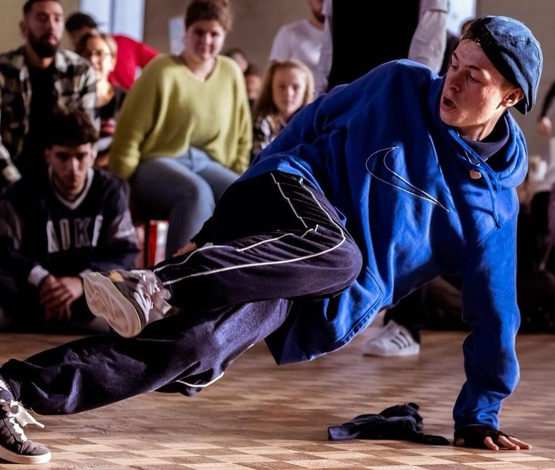
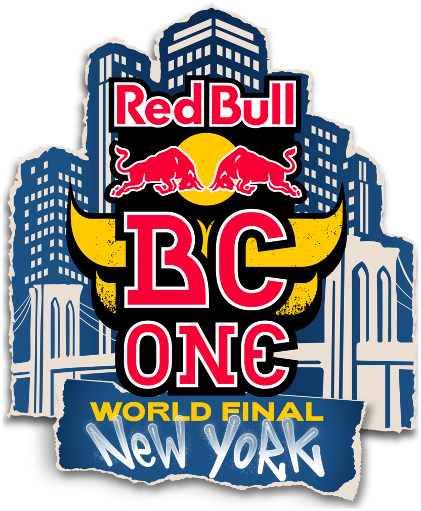
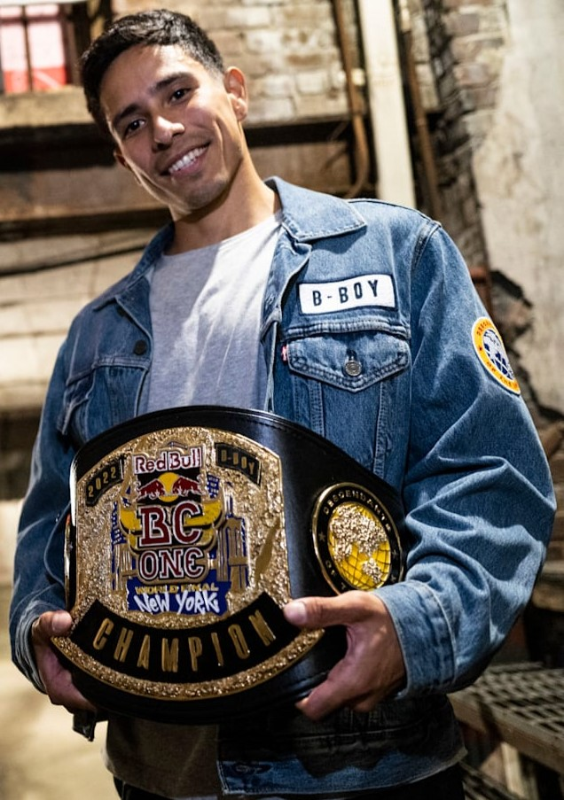
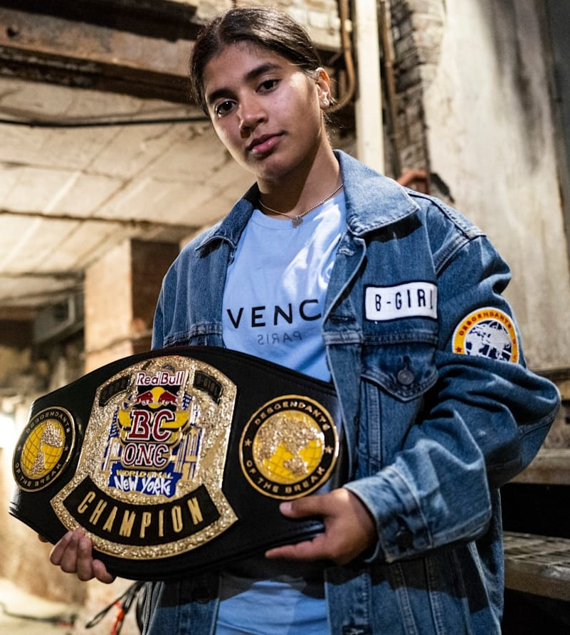
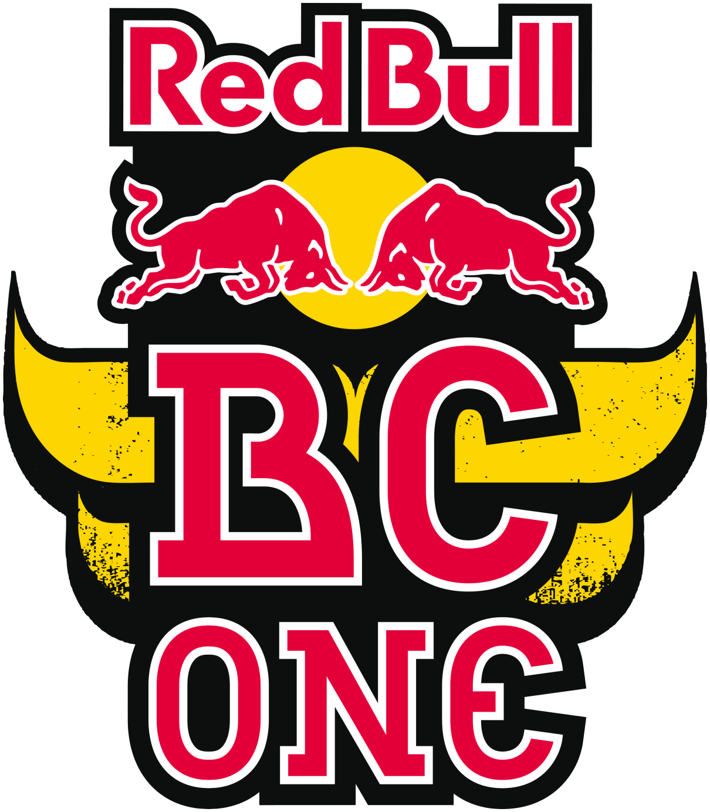
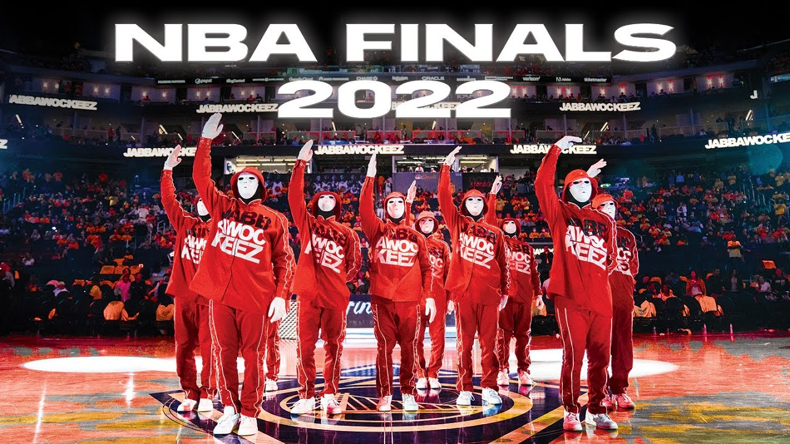

• Blog Hip-Hop •
Le HIP HOP : Qu’est-ce que c’est ?
- La danse Hip Hop est plus qu’une danse, le hip-hop se veut un mouvement, une attitude, un état d’esprit. « Etre Hip-hop » dans les années 70 à New York, c’est : s’habiller, chanter, danser selon des codes popularisés par le mouvement Zulu Nation, animé par le leader pacifiste, chanteur et musicien Afrika Bambaataa.
- L’idée consiste à canaliser la violence urbaine des quartiers du Bronx pour commencer à l’amener vers la compétition artistique. Le mouvement voulait inciter les jeunes à se défier dans la musique et la danse plutôt que dans des combats de rues.
- Animé par des rassemblements artistiques regroupant la danse (le break), le chant (le rap), la peinture (le tag et le graff) et la musique (DJ et musiciens), le hip-hop devient alors un véritable phénomène mondial de société. En effet, à la fois radicalement contestataire et festif, porteur de valeurs comme le respect, la tolérance et l’énergie positive, il devient rapidement un langage pour des jeunes du monde entier, marginalisés dans les banlieues de grandes villes.
- Depuis, le hip-hop a dépassé les frontières des banlieues et s’est imposé comme un mouvement artistique à part entière : la publicité, le cinéma, la danse s’en inspirent largement, des danseurs contemporains s’y initient.
- PLUS D'INFO SUR LE HIP-HOP
Une petite Photo de moi en train de pratiquer :)

Le Red Bull BC One
Le Red Bull BC One est une compétition internationale annuelle de breakdance organisée par la société de boissons énergétiques Red Bull depuis 2004. Elle oppose des B-Boys (breakdanceurs) qui dansent devant cinq juges qui décident du gagnant. La compétition oppose seize danseurs qui se rencontrent dans des matchs à élimination directe à partir des huitièmes de finale.Le Red Bull BC One est une compétition internationale annuelle de breakdance organisée par la société de boissons énergétiques Red Bull depuis 2004. Elle oppose des B-Boys (breakdanceurs) qui dansent devant cinq juges qui décident du gagnant. La compétition oppose seize danseurs qui se rencontrent dans des matchs à élimination directe à partir des huitièmes de finale.
En 2018, la compétition intègre pour la 1ère fois une catégorie Bgirl, dédiée aux femmes.
All Winners of Redbull BC One /
Redbull BC One Official




